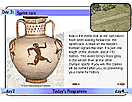
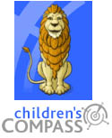
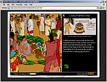
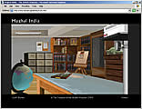
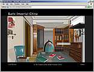
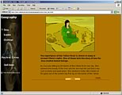
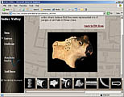
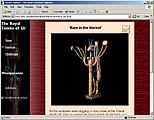
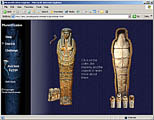

|
|
News
British Museum Ancient Egypt website wins award
The respected journal Scientific American has given the British Museum a 2004 Science/Technology Web Award for its website Ancient Egypt which it described
as "sophisticated and educational".
NEW microsite

The Games at Olympia Follow the events of the ancient Games and discover how they have shaped the Olympics today. |
Childrens COMPASS
If you want to find own way round the collections of The British Museum, then dive into children's COMPASS. Here you can browse hundreds of our incredible objects online. You can also play games, print out activities, send in work to the Noticeboard, or questions to 'Ask the expert'. Ancient Civilizations Ancient Civilizations explores world themes of continuing importance. It is aimed at upper Key Stage 2 and Key Stage 3 children and their teachers. Discover the monumental buildings of the world like the Great Temple of the Aztecs or the Ziggurat of Ur. Explore the cities of Mohenjo-daro and Great Zimbabwe to discover what features they share. Compare an Anglo-Saxon ship burial and an ancient Chinese tomb. Find the site at www.ancientcivilizations.co.uk Mughal India supports the National Curriculum and is aimed at Key Stage 3 children and their teachers. Hidden within one of the Museum's student rooms is a wealth of visual and textual resources from the British Museum's collections, 3D models of art and architecture and other original sources. By clicking on the interactive elements in the room, children can take a tour of the Taj Mahal, explore the methods of Mughal miniature painting and delve into a Mughal coin cabinet. Find the site at www.mughalindia.co.uk Early Imperial China supports the National Curriculum and is aimed at Key Stage 3 children and their teachers. Hidden within one of the Museum's student rooms is a wealth of visual and textual resources about this fascinating period in history. By clicking on the interactive elements in the room, children can view a slide show of the Great Wall, explore the imports and exports of the Silk Road and read original sources describing the First Emperor's reign. Find the site at www.earlyimperialchina.co.uk Ancient China explores the fascinating civilization that developed between the Yellow and Yangzi rivers. The website presents information about life, beliefs and practices in ancient China using animation, 3D models and objects from The British Museum's collection. Children can explore the tomb of a wealthy lord, learn about the legendary Pangu and Nuwa and even try silkworm farming! The site supports the National Curriculum and is aimed at upper Key Stage 2 children. Find the site at www.ancientchina.co.uk The Ancient India site for KS2 presents information about life, beliefs and practices in ancient India, using animation, 3-D models and objects from the Museum's collection. Children can explore the archaeological site of Mohenjo-Daro, a major ancient city in the Indus Valley and they can investigate the sculptures of the Amaravati Stupa, an important Buddhist site from the second century BC. Find the site at www.ancientindia.co.uk
Ancient Mesopotamia supports the National Curriculum and is aimed at Upper Key Stage 2 children and their teachers. The site contains a substantial Staff Room area where teachers can find a range of background information, discussion topics, printable worksheets and follow up classroom activities. Created specifically for KS2 pupils, Ancient Egypt consists of 10 object-based curriculum units with advice for teachers and full supporting materials for classroom use. The site is available at www.ancientegypt.co.uk
|
|
|||
|
home |
visit |
what's on |
join |
shop |
learning |
COMPASS |
world cultures |
sitemap |
contact us |
copyright
© The British Museum, 2002 |
|||||